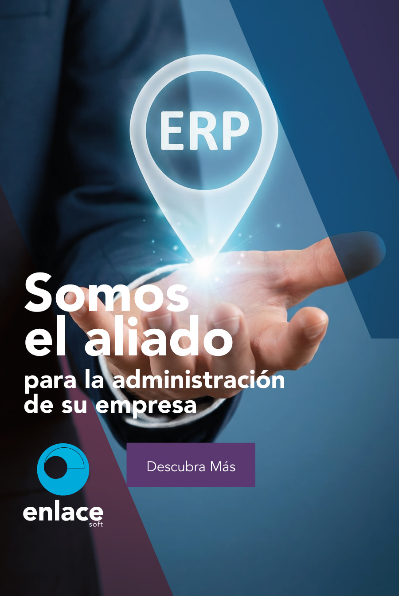

Implementación
Acompañamiento para incorporar el sistema a los procesos de su empresa.
TECNOLOGÍA COSTARRICENSE · DESDE 1988
Finanzas, inventarios y personas en una misma dirección. Software empresarial que se adapta a su forma de trabajar.
Desarrollado en Costa Rica.
Diseñado para crecer con usted.

La tecnología funciona mejor
cuando entiende su negocio.
01 / SOLUCIONES
Explore los módulos de enlace soft® y encuentre las herramientas para cada área de su empresa.
02 / SU INDUSTRIA
Partimos de sus procesos para ayudarle a elegir una solución que responda a su operación.
Explore herramientas de inventarios, compras, facturación electrónica y punto de venta junto con la gestión financiera.
03 / ANÁLISIS MBC
Desde 1988, Análisis MBC desarrolla soluciones de tecnología para la administración empresarial en Costa Rica. Somos desarrolladores y distribuidores de enlace soft®.
Esa cercanía con el producto nos permite acompañar a las empresas y adaptar las aplicaciones a las necesidades de su operación.
Conozca nuestro acompañamiento1996 Primeros pasos de enlace soft®.
2010 Gestión empresarial en Windows.
Hoy Soluciones para distintas industrias.
04 / ACOMPAÑAMIENTO
La herramienta es solo el comienzo. Nuestro equipo le acompaña para aprovecharla en su trabajo diario.
Acompañamiento para incorporar el sistema a los procesos de su empresa.
Conocimiento práctico para que su equipo utilice las herramientas con confianza.
Asistencia y asesoría para resolver necesidades en la operación del software.
Adaptaciones y aplicaciones que responden a necesidades específicas de su negocio.
ANTES DE CONVERSAR
Sí. enlace soft® contempla finanzas, inventarios, recursos humanos y activos fijos. Consulte con un asesor cuáles se ajustan a sus procesos.
Análisis MBC presenta opciones Cloud y Perpetua. Nuestro equipo puede explicarle las condiciones y ayudarle a evaluar la alternativa para su empresa.
Sí. La oferta incluye herramientas para empresas y profesionales contables, además de versiones y soluciones para distintos sectores.
EL SIGUIENTE PASO
Cuéntenos qué necesita mejorar.
Encontraremos juntos por dónde empezar.